Simulador de Vuelo
|
Escenario foto-realista del término municipal de Maderuelo para instalar en el programa de simulación de vuelo: "MicroSoft Flight Simulator 2002"
¿Que es el Flight Simulator? Es un programa de simulación de vuelo muy completo que tiene información bastante detallada de todo el mundo.
¿Que es un escenario de Flight Simulator? Es un conjunto de archivos que proporcionan información adicional al programa de simulación de vuelo de una zona determinada del mundo.
¿Que es el escenario foto-realista de Maderuelo? Es el conjunto de archivos que proporcionan al programa de simulación de vuelo una información completa y detallada de todo el término municipal de Maderuelo y cercanías.
¿Para que sirve este escenario? Sirve para poder volar de forma virtual pero muy realista y convincente por los paisajes y orografía de Maderuelo (fotos reales y modelo digital del terreno)
En breve, intentaremos "pregrabar" vídeos digitales de estos escenarios para aquellos que no sean usuarios de este fabuloso simulador puedan disfrutar del cielo de Maderuelo.
¿Que vas a ver? Vas a poder disfrutar de vistas como las siguientes:
|
|
| 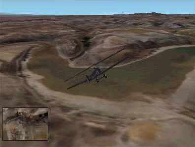 |
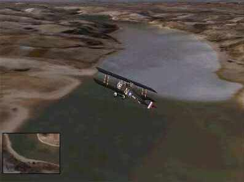 |
| Desde las Hazas a Maderuelo | Desde Maderuelo hacia la presa |
| 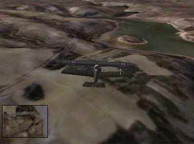 | 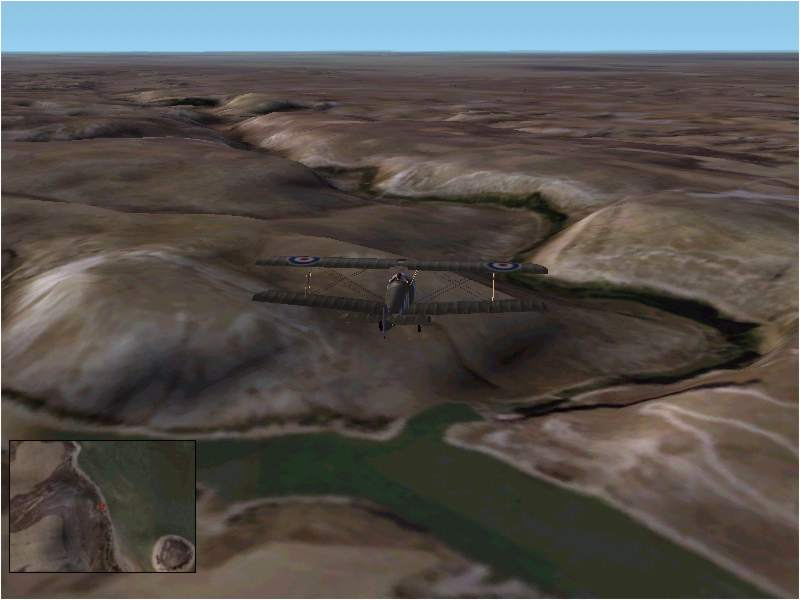 |
| Sobre el Monton de Trigo | Las Hoces del Río Riaza |
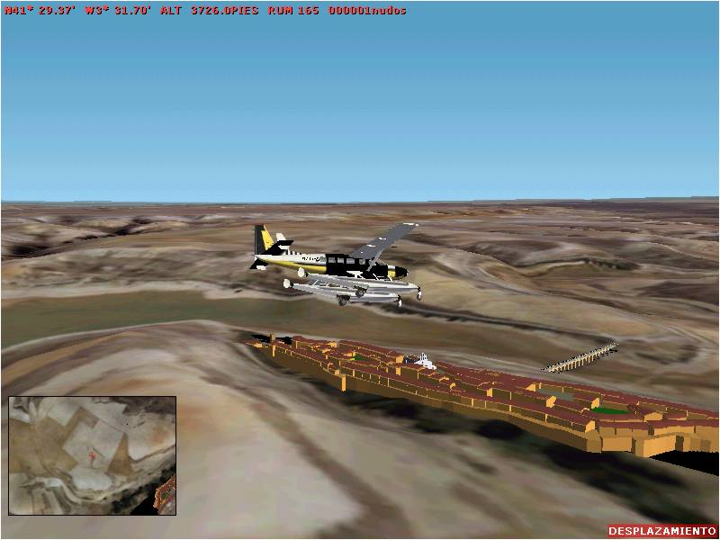
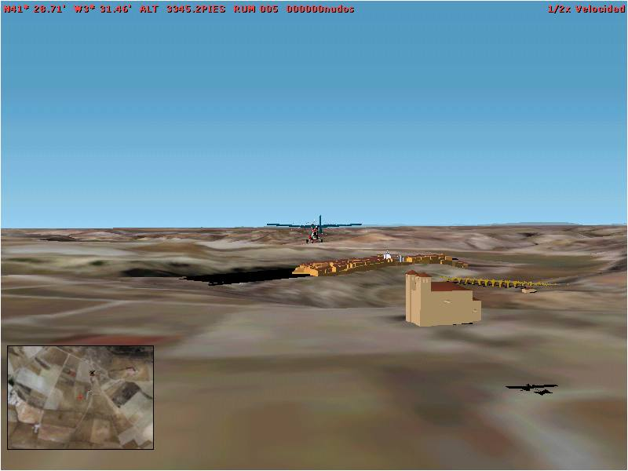
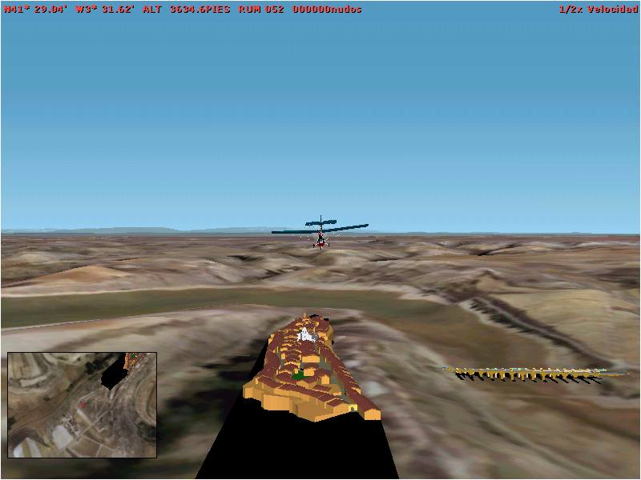
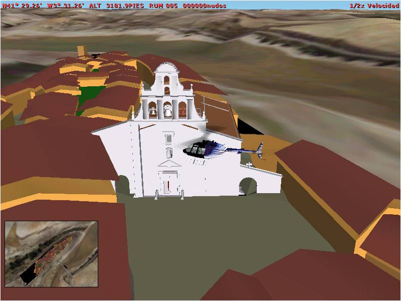
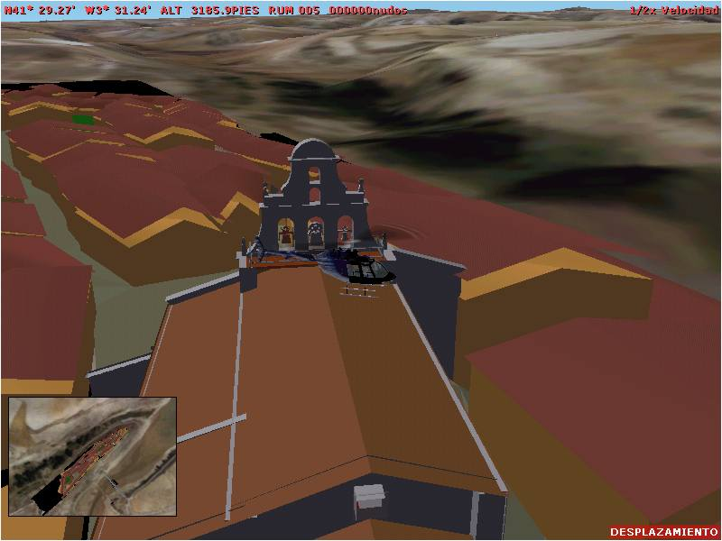
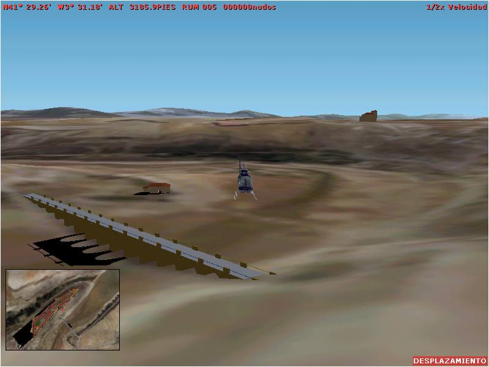
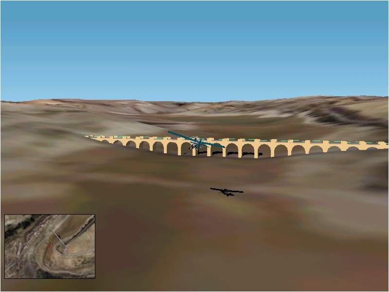
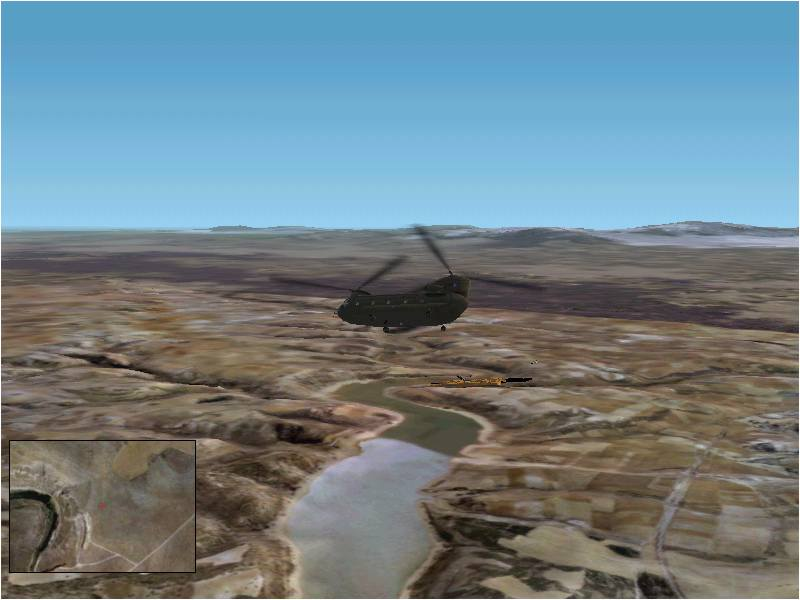
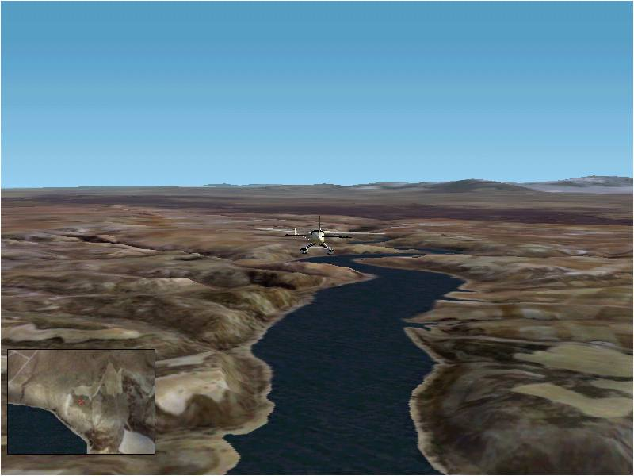
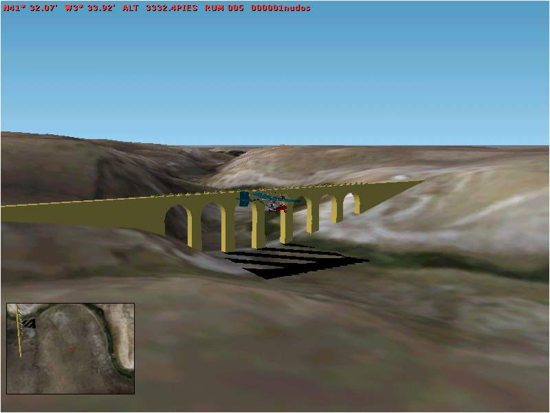